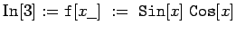

Mathematica nutzt die Möglichkeit, die Differentiation von Funktionen als Abbildung im Raum der Funktionen aufzufassen. Der Operator der Differentiation lautet in Mathematica oder abgekürzt . Ist die Funktion  definiert, so erhält man mit ihre Ableitung.
definiert, so erhält man mit ihre Ableitung.
| Beispiel |
|
 |